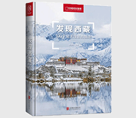

发现西藏

| 作者: 李栓科 著 | 开本: 16开 |
| 出版社: 北京联合出版公司 | 纸张: 铜版纸 |
| 出版时间: 2019-01 | 页数: 424页 |
| 版次: 1 | 字数: 600千字 |
| ISBN: 9787550289413 | 定价: 88.00 |
| 分类: 地理 | 装帧: 精装 |
内容简介:
本书是《中国国家地理》杂志社与西藏自治区旅游发展厅合作发起的寻找西藏100个*美观景拍摄点项目，通过梳理西藏自治区内的古建筑、寺庙、园林、、雪峰冰川、湖泊湿地、高寒草原、河流、宽谷、峡谷、土林、遗址、等旅游景点，从摄影*佳季节和*佳角度，发掘出100个*美的观景拍摄地，将西藏的自然之美、人文之美再次隆重地呈现给读者、旅游者和摄影爱好者，以期让更多的人了解西藏、爱上西藏，享受光与影、美景与镜头所带来的视觉盛宴和一段独特的自助行。
作者简介:
李栓科，《中国国家地理》杂志社社长兼总编辑。曾任中国首次北极科学考察队队长。曾长期从事南极、北极和青藏高原地区的地貌、第四纪地质环境演变等方面的研究工作。现任中国科学院地理科学与资源研究所研究员、兼任中国地理学会科普工作委员会主任、中国期刊协会副会长、中国海洋学会理事，第29届北京奥运会火炬手。
目录:
序言 如何使用本书
第一章 圣地拉萨“心灵之旅”
第二章 壮美日喀则“神奇之旅”
第三章 藏源山南“人文之旅”
第四章 醉美林芝“生态之旅”
第五章 豪迈昌都“奔放之旅”
第六章 旷野那曲“探险之旅”
第七章 梦幻阿里“朝圣之旅”
Copyright © 2018-2020 徐悦佳. All rights reserved.